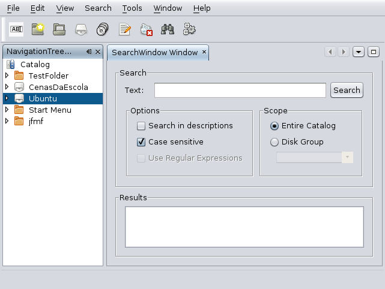
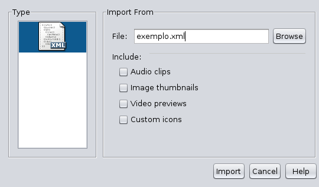
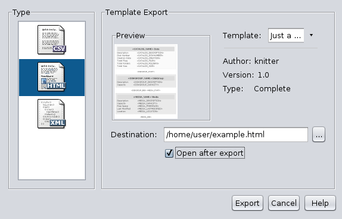

Para criar um novo catálogo é necessário decidir primeiro o tipo de base de dados que será usada para guardar as informações. Estão disponíveis vários motores de bases de dados, que terão de ser configurados pelo utilizador, ou uma base de dados interna, sem qualquer necessidade de configuração para o utilizador. A escolha dependerá do objectivo e das características do utilizador. Se não tem conhecimentos sobre instalação de servidores de bases de dados, é recomendado que escolha a opção de base de dados local. Se possui já um servidor que pretende usar, então poderá escolher a opção de rede e introduzir os dados referentes ao servidor. Na opção de base de dados local, uma base de dados será composta por vários ficheiros em disco, durante a criação do catálogo será criada um pasta onde esses ficheiros irão residir. Por omissão essa pasta será criada na pasta pessoal do utilizador. Esta localização poderá ser alterada na janela de criação de novos catálogos ou nas opções da aplicação.
O programa suporta alguns motores de bases de dados comuns. É assim possível escolher o servidor que mais se adequar à situação. Ao escolher criar um novo catálogo tem a possibilidade de indicar qual o tipo de servidor que pretende usar. É necessário que este servidor esteja já configurado e que exista uma base de dados e um utilizador com as configurações que indicar. O programa não cria a base de dados, cria apenas as tabelas que a compõem, todas as configurações, como a instalação do servidor, criação de uma base de dados e criação de um utilizador com as permissões correctas, têm de ser feitas antes de se tentar criar um novo catálogo. Actualmente, os servidores suportados são: MySQL, MS SQL Server 2005, Firebird e PostgreSQL. Não foi testada a versão 2008 do MS SQL Server, por esse motivo a mesma não é oficialmente suportada.
A abertura de um catálogo é semelhante ao processo de criação Se estiver a usar a opção de base de dados local, poderá simplesmente navegar até à pasta que contém o catálogo e seleccionar essa pasta. O nome do catálogo será preenchido automaticamente.
Não existe uma opção específica para guardar os dados, sendo os mesmos guardados automaticamente. O programa regista todas as alterações que são feitas aos dados, não sendo por isso necessário ter algum cuidado específico em guardar manualmente as alterações.
Novos ficheiros são adicionados através da leitura de dispositivos de armazenamento. Não é possível adicionar apenas um ficheiro, a adição terá de ser sempre de novos discos, novas pastas, ou outro dispositivo de armazenamento acessível ao computador. Ao adicionar um novo disco, Figura 3, é possível alterar o nome do disco que será guardado no catálogo, indicar o Grupo de Discos ao qual o novo disco será adicionado e indicar se será feito o cálculo do código SHA-1. Este código é usando em funcionalidades avançadas e embora a sua criação seja opcional, essas funcionalidades não estarão disponíveis em informações de ficheiros sem o código calculado.

É possível pesquisar ficheiros catalogados através do seu nome, ou de uma palavra ou frase presente na sua descrição. A pesquisa pode ser sensível a maiúsculas e ser restrita a um grupo de discos.

A importação de dados está disponível para ficheiros XML, previamente criados pelo JFindMyFiles. Para importar dados exportados anteriormente, basta indicar o nome do ficheiro que contém os dados a exportar.
A exportação de dados está disponível em duas opções, exportação simples, usada para exportar todos os dados para um ficheiro de texto num formato portável, XML ou CSV, e exportação usando templates.
Para a exportação simples é apenas necessário indicar o nome do ficheiro destino. Se pretender exportar imagens, vídeos ou clips de áudio que existam no catálogo, os mesmos serão copiados para a pasta onde foi criado o ficheiro de exportação. Tenha em atenção, que se pretender usar o ficheiro de exportação para mais tarde importar no JFindMyFiles, todos os ficheiros de áudio, vídeo e imagem, necessitam estar na mesma pasta que o ficheiro XML.

Para exportar os dados usando um template HTML, necessita ter alguns templates instalados. Todos os recursos indicados no template serão copiados para a pasta de destino da exportação.

Caso pretenda obter mais templates poderá consultar a secção de templates no sítio oficial da aplicação, http://jfindmyfiles.berlios.de/templates.
A instalação dos templates faz-se colocando a pasta do template na pasta configurada na janela de opções. Se não alterou a configuração estará na sua pasta pessoal, dentro da pasta “.jfmfuserfiles/Templates”. Caso o seu template venha compactado, descompacte-o e coloque a pasta com todos os ficheiros na pasta de templates.